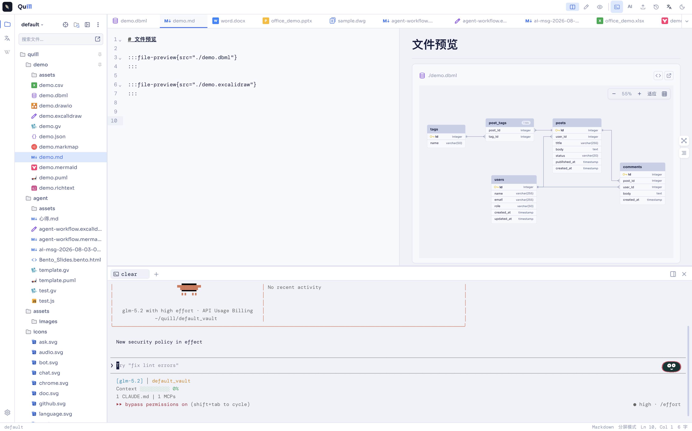
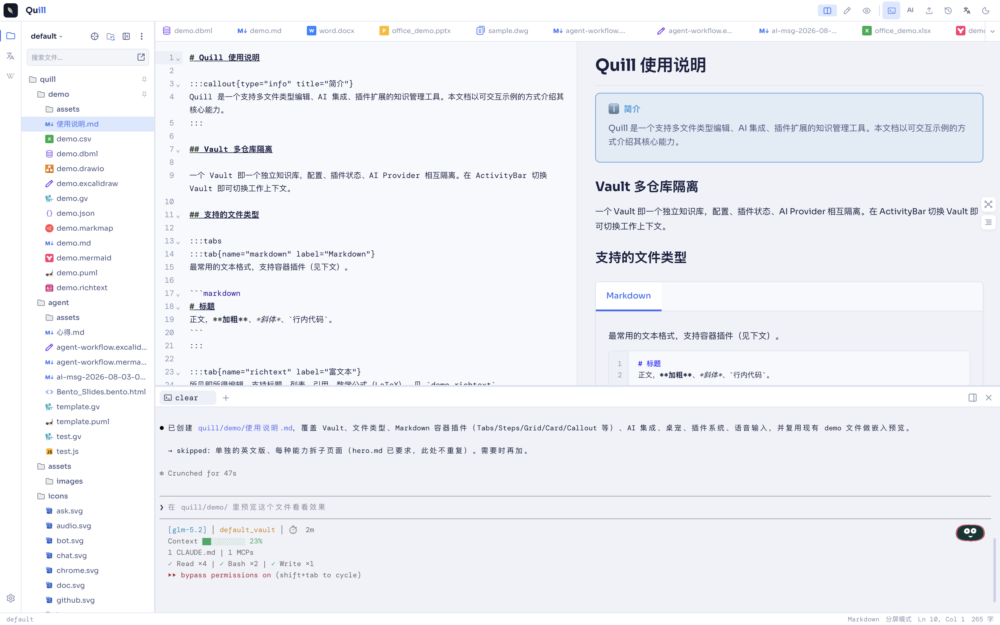

内置终端面板
在 Folyn 工作区内打开终端面板，与编辑器并列展示，文件路径自动同步，无需 cd 到工作目录。
AI 操作文本
Claude Code、Codex CLI 等代理在终端里直接读写当前文档，AI 改完立刻在编辑器中可见，省去手动复制粘贴。
工作流集成
终端与编辑器、AI 面板共享上下文，命令输出可以回填到光标处，把"编辑—调用—回填"压成一条流水线。
screenshots
效果截图

终端面板与编辑器并列

Claude Code 直接改文档